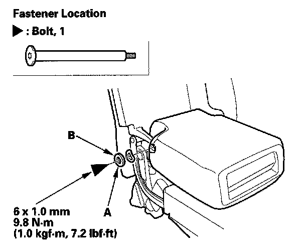
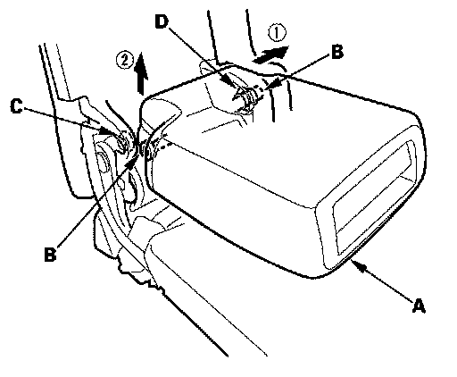
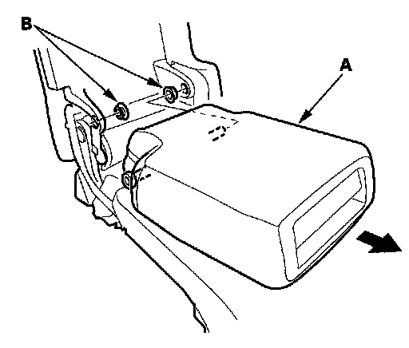

Second Row Seat Armrest
Second Row Seat Armrest ReplacementNOTE: Take care not to tear the seams or damage the seat covers.
1. Remove the ISO fix bracket outer cover.

2. Using a T30 TORX bit, remove the bolt, then remove the washer (A) and wave washer (B).

3. Remove the armrest.
1. Slide the armrest (A) toward the left side of the vehicle.
2. Remove the pivot shaft (B) from the bushing (C) on the passenger's side of the vehicle by pulling up on the armrest, and remove the pivot shaft from the bushing (D) by pulling up on the armrest.

4. Remove the armrest (A) and bushings (B).
5. Install the armrest in the reverse order of removal, and check if the bushing are damaged or stress-whitened, and if necessary, replace them with new ones.